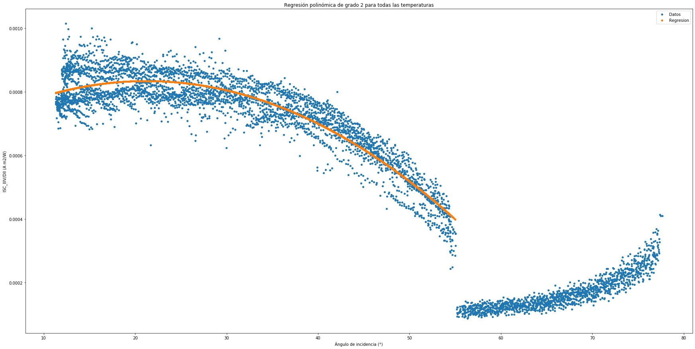
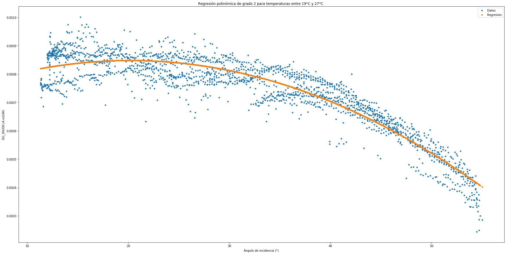
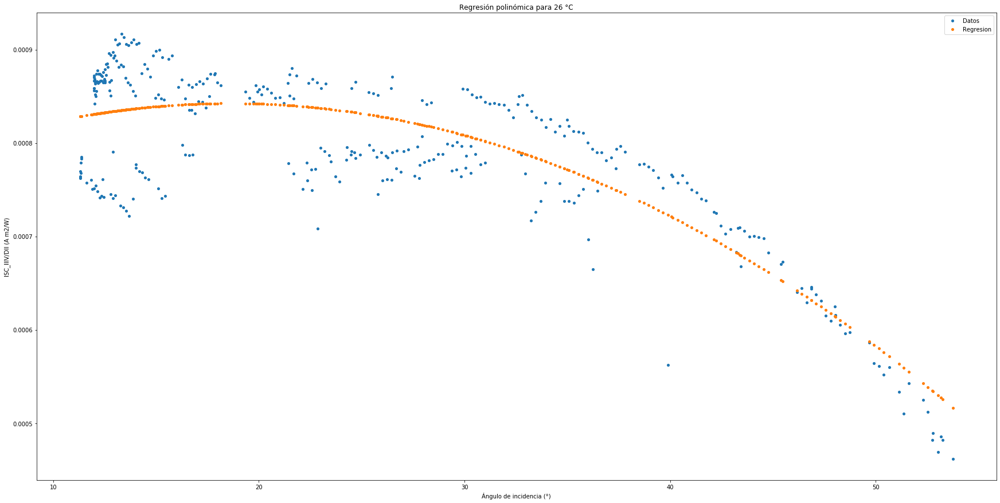
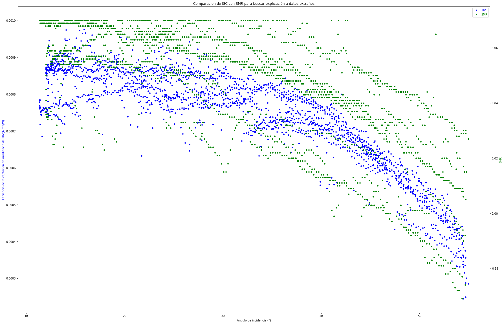
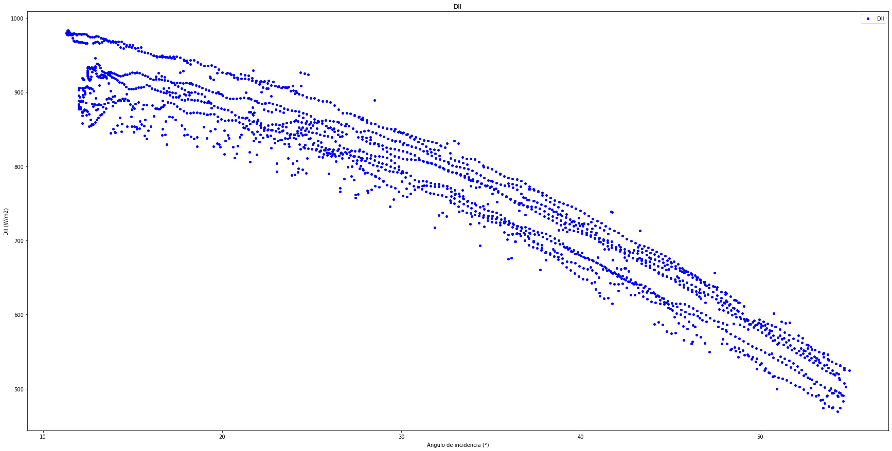
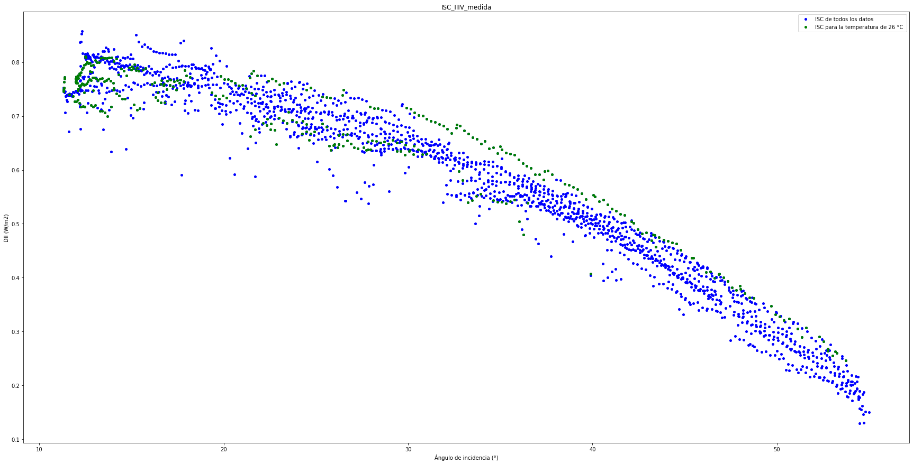
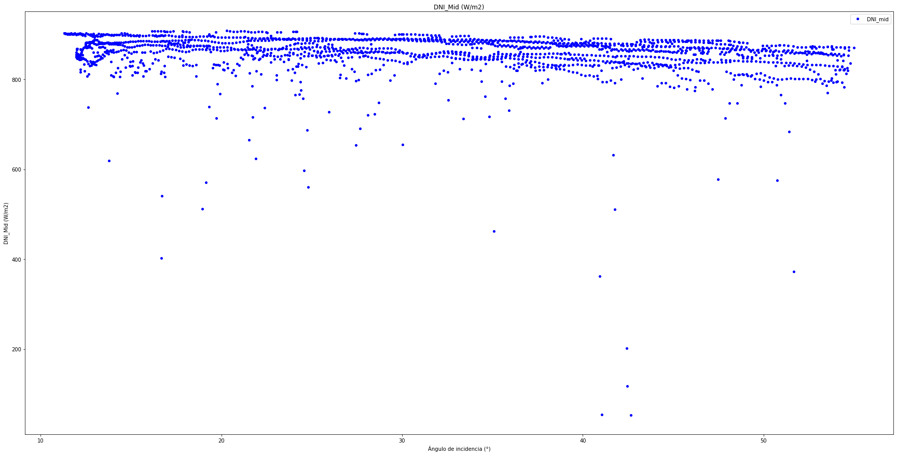
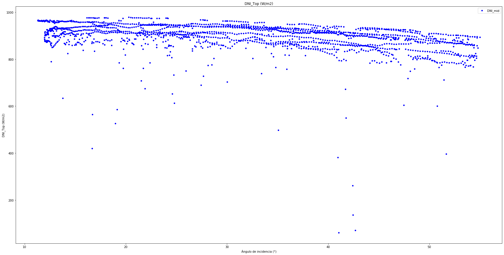
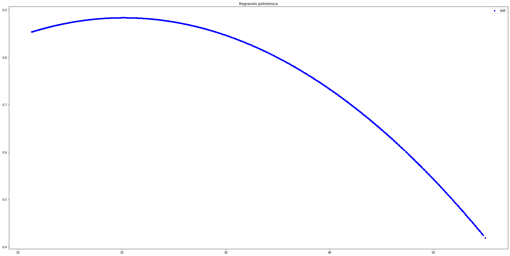

In [22]: runfile('C:/Users/juanj/OneDrive/Escritorio/repositorio_tfg/Calcular_iam.py', wdir='C:/Users/juanj/OneDrive/Escritorio/repositorio_tfg')
Reloaded modules: Error
Con el total de los datos
0.8483345852659983
Temperaturas entre 13 y 35 °C
Con el 0.6223404255319149de los datos
0.8645252411531568
Temperaturas entre 19.0 y 27.0 °C
Con el 0.09308510638297872 de los datos
Coeficiente de determinacion del 0.7277515378837726
Temperaturas entre 26.0 y 27.0 °C









In [23]: